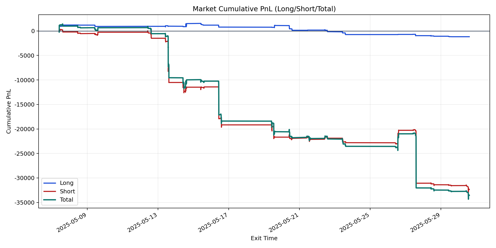
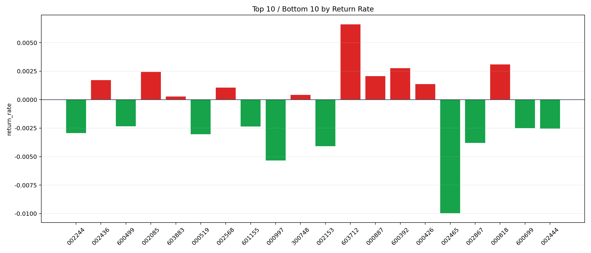

| repo_root | /home/haoranyou/data/output/alpha0.4_1w_5s_3ticks_index_filter/index_weights_500 |
|---|---|
| period_months | 1 |
| period_label | 2025-05-07_to_2025-05-30 |
| start_time | 2025-05-07 09:50:32 |
| end_time | 2025-05-30 14:32:02 |
| n_trades | 2003 |
| n_symbols | 43 |
| total_pnl | -33538.66809999989 |
| long_total_pnl | -1182.6231499999685 |
| short_total_pnl | -32356.044949999938 |
| total_entry_notional | 18810438.0 |
| long_entry_notional | 3890460.0 |
| short_entry_notional | 14919978.0 |
| total_return_rate | -0.00178298177320485 |
| long_return_rate | -0.00030398028767805567 |
| short_return_rate | -0.0021686389182343255 |
| top_symbols_by_return | ["603712", "000818", "600392", "002085", "000887", "002436", "000426", "002568", "300748", "603883"] |
| bottom_symbols_by_return | ["002465", "000997", "002153", "002867", "000519", "002244", "002444", "600699", "601155", "600499"] |

